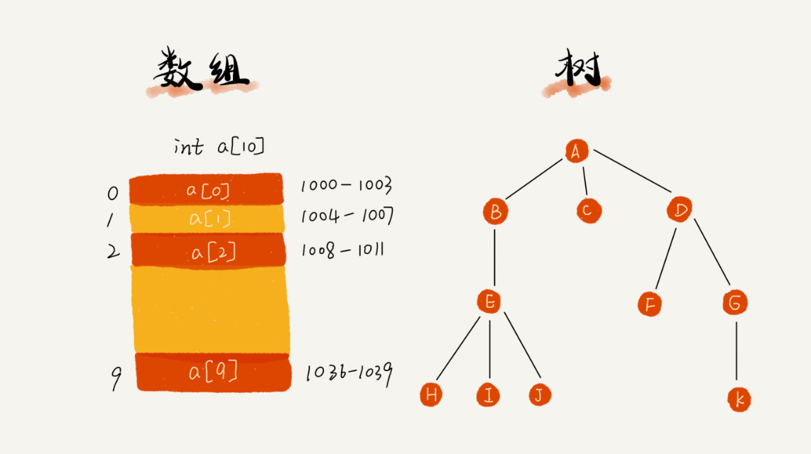
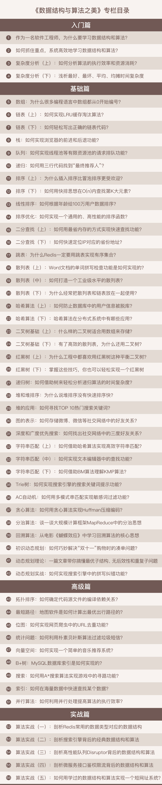

数据结构与算法之美
为工程师量身打造的数据结构与算法私教课
专栏简介
踏上了编程之路，也就意味着你选择了一种终身学习的生活方式。每一个程序员都要练就十八般武艺，而掌握数据结构与算法就像修炼了九阳神功。换句话说，掌握了数据结构与算法，你的内功修炼速度就会有质的飞跃。
无论你是从事业务开发，想要评估代码性能和资源消耗；还是从事架构设计，想要优化设计模式；或者想要快速玩转热门技术，比如人工智能、区块链，都要先搞定数据结构与算法。因为，任凭新技术如何变化，只要掌握了这些计算机科学的核心“招式”，你就可以见招拆招，始终立于“不败之地”。
那怎样才能真正掌握数据结构与算法呢？是把常用的数据结构与算法背得滚瓜烂熟吗？即便如此，面对现实世界的千变万化，你也不太可能照搬某个算法解决即将遇到的下一个问题。因此，就像学习设计模式、架构模式一样，学习数据结构与算法的关键，在于掌握其中的思想和精髓，学会解决实际问题的方法。
王争，前 Google 工程师，从事 Google 翻译相关系统的开发，深入研究算法十余年。现任某金融公司核心系统资深系统架构师，负责公司核心业务的架构设计和开发。
他将采用最适合工程师的学习方式，不拘泥于某一特定编程语言，从实际开发场景出发，由浅入深教你学习数据结构与算法的方法，帮你搞懂基本概念和核心理论，深入理解算法精髓，帮你提升使用数据结构和算法思维解决问题的能力。
特别提醒：
专栏内容相关代码，均随更新进度上传至 GitHub，点击这里，即可查看。
除正文外，还为订阅用户特别准备了加餐文章，以下是部分：
用户故事 2：只有站在思维的高处，才有足够的视野和能力欣赏美
专栏模块
专栏共 56 期，分为 4 个由浅入深的模块。
- 入门篇
为什么要学习数据结构与算法？数据结构与算法该怎么学？学习的重点又是什么？这一模块将为你指明数据结构与算法的学习路径；并着重介绍贯穿整个专栏学习的重要概念：时间复杂度和空间复杂度，为后面的学习打好基础。
- 基础篇
将介绍最常见、最重要的数据结构与算法。每种都从“来历”“特点”“适合解决的问题”“实际的应用场景”出发，进行详细介绍；并配有清晰易懂的手绘图解，由浅入深进行讲述；还适时总结一些实用“宝典”，教你解决真实开发问题的思路和方法。

- 高级篇
将从概念和应用的角度，深入剖析一些稍复杂的数据结构与算法，推演海量数据下的算法问题解决过程；帮你更加深入理解算法精髓，开拓视野，训练逻辑；真正带你升级算法思维，修炼深厚的编程内功。
- 实战篇
将通过实战案例串讲前面讲到的数据结构和算法；并拿一些开源项目和框架，剖析它们背后的数据结构和算法；并带你用学过的内容实现一个短网址系统；深化对概念和应用的理解，灵活使用数据结构和算法。
